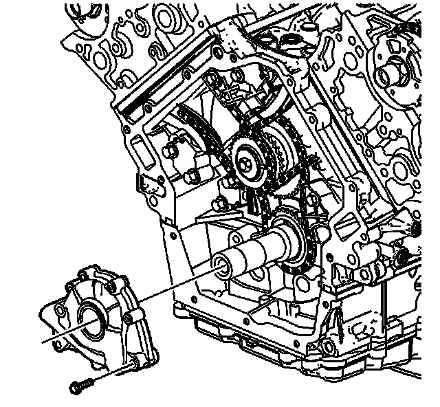

117. Oil Pump Installation
Oil Pump Installation
Tools Required
J 45059 Angle Meter

1. Install the oil pump drive spacer into the oil pump so that the drive flat engages the pump rotor.
2. Position the oil pump on the crankshaft.
3. Install the retaining bolts.

Notice: Refer to Fastener Notice (Fastener Notice) .
4. Apply upward pressure on the pump while tightening the three retaining bolts. Tighten the bolts in the sequence (1, 2, 3) shown.
1. First Pass
Tighten the oil pump mounting bolts in sequence to 10 N.m (89 lb in).
2. Final Pass
Tighten the oil pump mounting bolts in sequence an additional 35 degrees using the J 45059 .